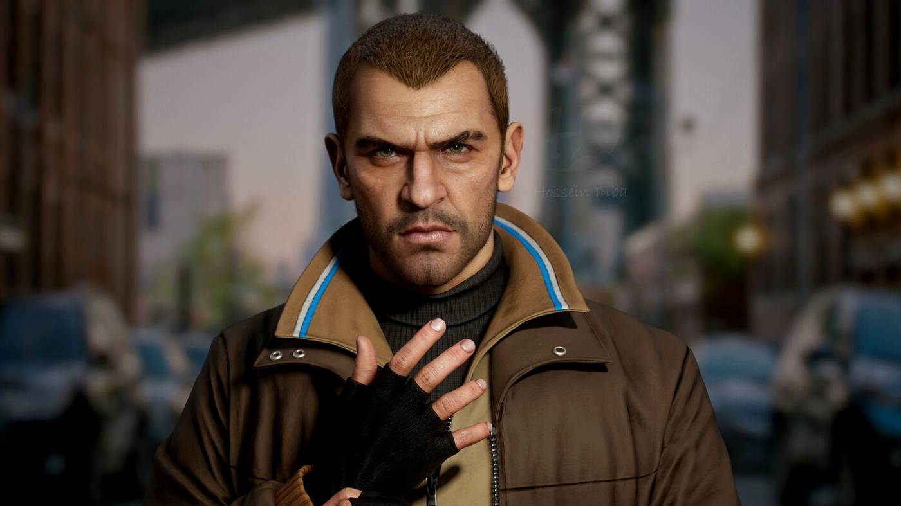

GTA 4
Grand Theft Auto IV, ook wel bekend als GTA 4, is de 11e pc-game in de Grand Theft Auto-serie van Rockstar Games. Deze game is de eerste van de 4e generatie GTA-games die de nieuwe engine gebruikt. Het spel was oorspronkelijk gepland voor 16 oktober 2007 in de VS en Canada en 26 oktober in Europa, maar werd later uitgesteld tot 29 april 2008. Deze game is ontwikkeld voor PlayStation 3 en Xbox 360. GTA 4 werd ook uitgebracht voor pc op 2 december 2008 in Noord-Amerika en 3 december 2008 in Europa. De geschiedenis van Grand Theft Auto 4 is geschreven door Dan Hauser, mede-oprichter van Rockstar Games. Volgens producer Leslie Benzies hebben in totaal zo'n 1000 mensen aan GTA 4 gewerkt. De eerste promotiefilm, ongeveer een minuut lang, verscheen eind maart 2007. Sindsdien zijn er nog vijf trailers uitgebracht, waarvan
Het Verhaal
De hoofdpersoon, Nico Bellic, is een 30-jarige Oost-Europese immigrant die op de Balkan heeft gediend voordat hij in Liberty City aankwam. Hij komt naar Liberty City om de Amerikaanse droom na te jagen. Niko werd daartoe overgehaald door zijn neef Roman Bellic, die hem mailde en vooral zei dat hij een prachtig leven had met tonnen vrouwen, veel sportwagens en mooie grote villa's. Maar als ze daar aankomen, blijkt dit allemaal een leugen te zijn en vraagt hij Niko om te helpen bij het afbetalen van het geld en de gokschulden van de Albanese maffia onder leiding van Dardan Petrela. In het eerste deel van de game had Niko veel gesprekken met Roman. Omdat dit de enige persoon is die hij kent. Roman zit zwaar in de schulden door taxifaillissementen, gokken en bendeproblemen. Hij heeft Nico's hulp nodig, maar zijn brutale aanpak maakt hem alleen maar erger.
Roman Bellik is een personage uit Grand Theft Auto IV. Roman is Nico's 31-jarige neef die 15 jaar in Liberty City woonde voordat hij daarheen verhuisde. Roman's moeder stierf tijdens de Balkanoorlogen. Roman vertelt de familie dat ze twee vrouwen, vier bubbelbaden en 15 sportwagens hebben, maar in werkelijkheid zijn er alleen kleine, vuile appartementen in Broker en een failliet taxibedrijf. Met deze leugen brengt hij Nico naar de stad. Roman heeft vanwege zijn gokverslaving een enorme schuld aan verschillende mensen in de stad, voornamelijk de Albanese maffia. Roman is echter optimistisch en houdt vol dat hij bezig is met het realiseren van de 'American dream'. Hij arriveerde met niets in Liberty City, maar werkte en spaarde geld om een taxi te kopen. Toen hij genoeg geld had, kocht hij het bedrijf waarin hij een jaar woonde, omdat hij aan het sparen was voor een appartement. Hij heeft een vriendin, Mallory, met wie hij zal trouwen. Tijdens de voorlaatste missie van het spel wordt hij, afhankelijk van de keuze van de speler, ook neergeschoten.